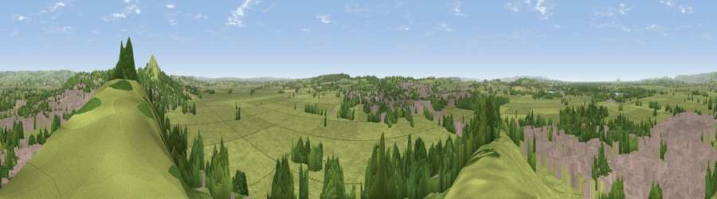

Viewpoint near Glastonbury
#12478 in England · top 30% of its area beats it · near Glastonbury · footpathWhere it is
The exact computed spot (ST 49175 38125). Click the marker for map links.
Public access: a public right of way passes within 9 m of this spot. Computed from Natural England's CRoW access layer and OpenStreetMap rights of way — not the legal definitive map. Always verify locally.
The view, rendered

A 360° render of this exact spot computed from the terrain model, tree cover and land cover — summer colours, afternoon light, calibrated against photographs of famous viewpoints. Real trees, hedges and buildings will differ in detail.
The panorama
Grey silhouette: terrain skyline in each direction (720 bearings, Earth curvature and refraction included). Dashed green: skyline with trees (+15 m) and buildings (+8 m) as obstacles. Blue strip: how far the ground is visible on each bearing.
Where the view opens
Wedge length = distance to the farthest visible ground on that bearing (vegetation-aware). Rings at 10, 25 and 50 km.
What fills the view
55% grassland · 24% built-up · 20% woodland ·
Angular shares of the visible panorama (visual magnitude), not map area. Landscape diversity 0.46 (0–1 Shannon).
Key numbers
More beautiful places nearby
The staircase of upgrades: each row has a higher view potential than everything closer. Driving times are estimates from straight-line distance, calibrated against real road routing — check an actual route before setting out.
| Place | Direction | Drive | Score |
|---|---|---|---|
| Viewpoint near Glastonbury | ENE · 2 km | ~4 min | 66.8 |
| Glastonbury Tor | ENE · 2 km | ~5 min | 75.8 |
| Socombe Hill | W · 10 km | ~20 min | 76.4 |
| Viewpoint near Lamyatt | E · 18 km | ~31 min | 77.8 |
| Viewpoint near Axbridge | NNW · 19 km | ~32 min | 79.2 |
| Beacon Batch | N · 19 km | ~33 min | 79.4 |
| Bleadon Hill [Loxton Hill] | NW · 23 km | ~38 min | 79.6 |
| Cothelstone Hill | W · 31 km | ~48 min | 82.1 |
51.14012, -2.72787 · source: screening · position refined by local search. Computed location — check access rights before visiting.